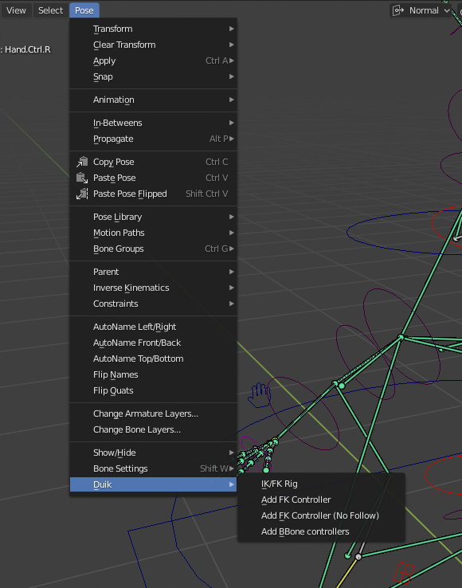
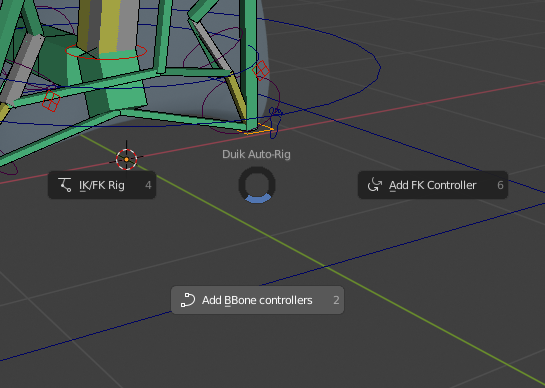

Armature tools
Menus
3D View ‣ Menu ‣ Pose
Available in pose mode only
With an Armature in Pose mode, you’ll find a Duik section in the Pose menu of the 3D View, which contains the rigging tools available.

These rigging tools are also quickly accessible through a pie menu, using the [SHIFT] + [R] keyboard shortcut in the 3D View in Pose mode.

Another pie menu accessible with the [SHIFT] + [V] keyboard shortcut allows you to change the display of the active armature very quickly.

Controls, bones and layers
All these tools are bits of auto-rigs, and create nice controls.
The controllers are bones which are named with the “.Ctrl” suffix to make them easy to find.
These tools create some other bones needed for the rig, but the ones you’ll need to influence your mesh objects are always the ones you’ve created yourself before using these tools, located by default in the 8th layer.

You can change the layers used by Duik in the settings of the add-on.
Last Modified on